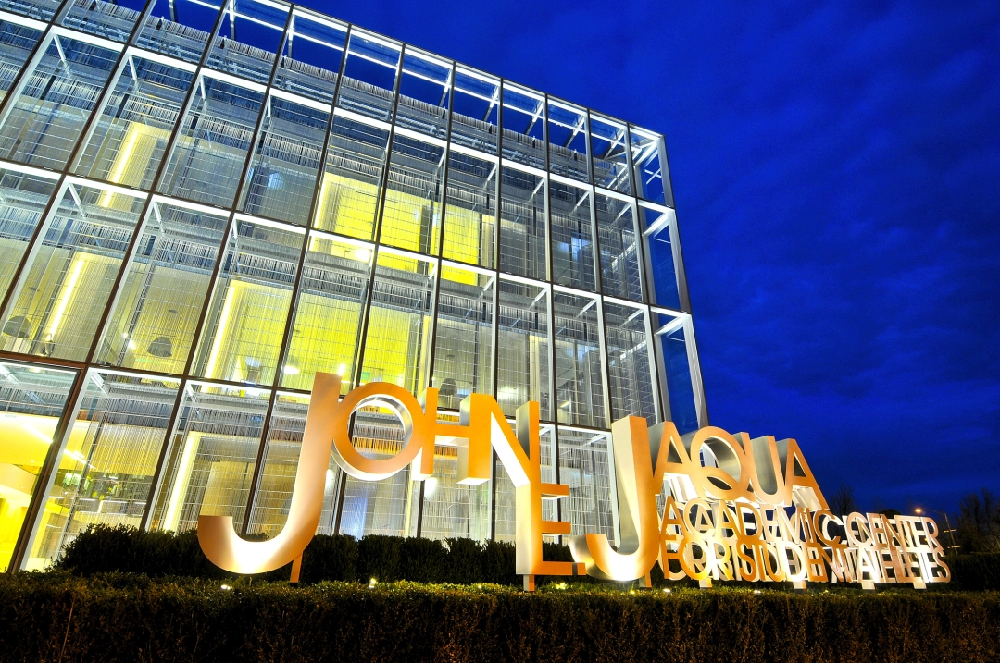

The John E. Jaqua Academic Center for Student Athletes is a 40,000 sq. foot, state-of-the-art building for the NCAA-mandated academic services for student athletes. It stands as a showpiece, contributing to both recruitment of new athletes as well as retention and success of Oregon's many student athletes. Located next to the office of admissions at Oregon Hall, the Jaqua Center is a beacon marking the Franklin Boulevard campus entrance. The building is surrounded by water on all four sides, as if it floats on the landscape, just restingthere in a confident, yet tranquil manner. Despite the steady car, pedestrian and bike traffic - the Jaqua Center provides respite in an otherwise busy landscape. Designed by ZGF Architects LLP, it is intended for introspection, study, and learning. This concept is reinforced by a Birch "forest" on the North side and a reflecting pool to evoke a "garden of the mind" as a fertile and conducive place for learning.
The first floor of the building is open to the publice with a cafe, auditorium, atrium for public events and an academic hall of fame to recognize past, present and future student athletes at the University of Oregon. The two floors above are for the exclusive use of Oregon's student athletes and staff. The facility includes a 114-seat auditorium, 35 tutor rooms, 25 faculty/advising offices, conference room, flexible classroom, computer lab with 54 computers, graphics lab, 3 teaching labs, library, student lounge, tutor lounge, staff lounge and study carrels for all freshmen in Frosh Hall.
The Camp 13 Beanery is owned and operated by Allann Brothers Coffee, a local coffee roaster. Named for its proximity to 13th Avenue on campus, the cafe welcomes the public seven days a week. The focal point is a four-sided gase fireplace surrounded by a leather lounge seat around the yellow shape of the University's signature "O". The cafe serves coffee, sodas, pastries, pizzas and sandwiches(with many named in honor of former University athletes). All undergraduate students recieve a 10% discount.
The facility also serves as a pantheon of student athletic academic achievments. This is accomplished through the seamless integration of art, environmental graphics and the building's architecture. These exhibits will continue to evolve over time as new honorees are added. In one example, the atrium lounge displays the Emerald, Jackson and Higdon awards. These awards are given each year to top student-athletes in the area of scholastic ability, community services and sportsmanship. Redesigned in cast bronze by contemporary Spanish artist Rosa Serra, renowned for her sculptures and Olympic art, they provide a stunning display for visitors to interact with current and past winners. On another atrium wall, a three-story mural is constructed of 10,000 small 3 x 3 photos of student athletes that were acid-etched onto stainless steel and then assembled in such a way that Albert Einstein's face emerges when viewed from a distance. Other elements include floor engravings of Academic All-American honorees, a color and sandblasted glass wall celebrating PAC-12 All Academic recipients and a stair well that contains the names of more than 4,000 lettermen that graduated from the University between 1945 and 2009.
The facility is the result of a generous gift from Phil and Penny Knight to encourage academic achievement along with athletic performance. The building is named after John E. Jaqua, who was a football hero, war hero, successful farmer, revered lawyer, founding board member of Nike, adored father and longtime supporter of the University of Oregon. Jaqua's legacy is meant to awaken every generation to look itself in the eye and be the best it can be; his namesake represents a challenge to student athletes to fulfill their promise.
Integrity to the University of Oregon student experience is a key design driver. For example, the tile pattern in the men's and women's restrooms is the visual representation of the sound wave file from the Oregon Duck's announcer who starts every football game with "It never rains in Autzen Stadium." The floor in the elevator is engraved with Oregon slogans like "I love my ducks!" and the leather handrail in the elevator has the words to the Oregon fight song.
The steel and glass cubic structure is created with a ventilated "double skin" glass exterior. Floor-to-ceiling vision glass allows natural daylight to flood the interior space and a stainless steel screen forms a layer within the glass cavity. Externally, the stainless steel screen provides occupant privacy; internally there is complete visual transparency toward the landscape and the gardens. The double skin wraps a blanket of warm air around the building and mitigates the highs and lows of temperature fluctuations. The insulating facade also creates superior acoustics, helping create an inwardly focused atmosphere conducive to study and learning. LED lights at the base of the wall's perimeter illuminate the exterior at night, turning the skin into a translucent glowing box.